⭐ New for FME 2026.1: The Coordinate System parameter no longer appears on the Add Reader and Add Writer dialogs. You can now access it with the rest of the reader and writer parameters. The Parameters button has moved from left to right.
After completing this lesson, you’ll be able to:
In this lesson, you will:
As we know, a workspace contains a reader to read a dataset, and each feature type in that dataset is shown in the workspace canvas:
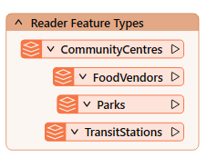
To control how the reader operates requires the use of reader parameters.
You can find reader parameters by clicking Parameters in the Generate Workspace or Add Reader dialogs:
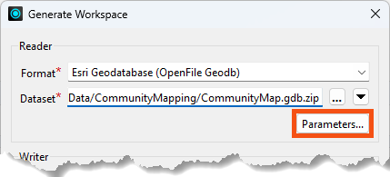
⭐ New for FME 2026.1: The Coordinate System parameter no longer appears on the Add Reader and Add Writer dialogs. You can now access it with the rest of the reader and writer parameters. The Parameters button has moved from left to right.
They can also be found in the Navigator window in Workbench:
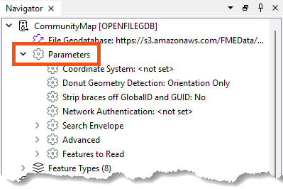
Because parameters refer to specific components and characteristics of the related format, readers of different formats have different control parameters.
Double-click on any parameters to edit a parameter in the Navigator window. Doing so opens up a dialog where you can set the parameter’s value.
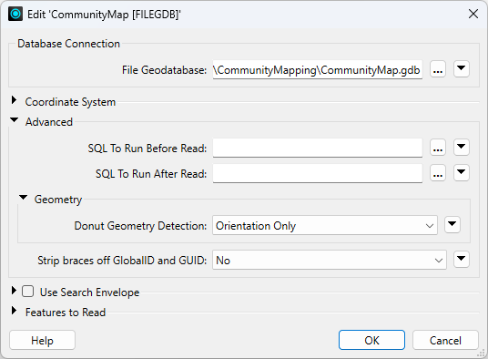
Reader parameters control all feature types in the dataset. Think of it like brewing a pot of coffee. The strength control on the coffee machine affects all the cups poured.
Because some reader parameters affect how feature types are generated, they can only be set when you add the reader. If you set them incorrectly or want to change them, you have to delete the reader and add it again.
An example is the Group Entities By attribute for the Autodesk AutoCAD DWG/DXF format. This attribute impacts how feature types are formed and can only be set when you add the reader.
This behavior does not exist in writer parameters.
Like readers, we know a workspace contains a writer to write a dataset, and each feature type to be written is shown in the workspace canvas:
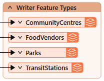
To control how that writer operates requires the use of writer parameters.
Writer parameters can be located and set by clicking Parameters when a new workspace is being generated:
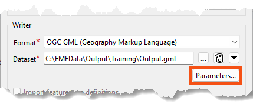
They can also be found in the Navigator window in Workbench:
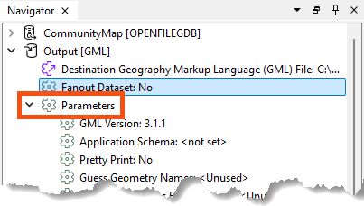
Finally, there is a button that appears when you select feature types that can take you directly to the reader/writer parameters:
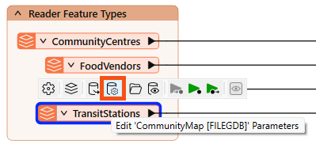
Because parameters refer to specific components and characteristics of the related format, writers of different formats have different control parameters.
Double-click on any parameters to edit a parameter in the Navigator window. Doing so opens up a dialog where the parameter’s value may be set:
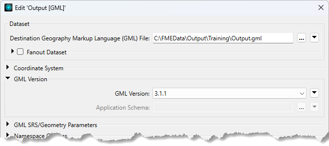
Like readers, writer parameters control all feature types in the dataset. In the above screenshot, all feature types are version 3.1.1.
However, each reader and writer feature type has settings, just as each cup of coffee can be adjusted with cream and sugar. You can learn more in the documentation.
Feature types also have parameters controlling how FME reads or writes a table, layer, or other data group.
You can view and edit these parameters by double-clicking a feature type to open the Feature Type dialog:
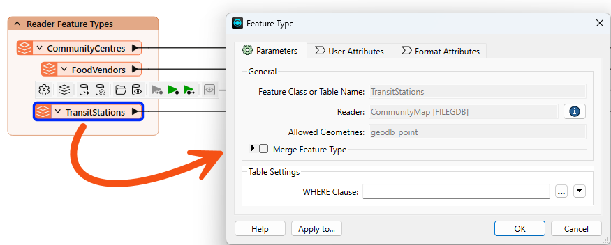
You can also find them in the Navigator under the reader or writer > Feature Types > feature type name > Parameters:
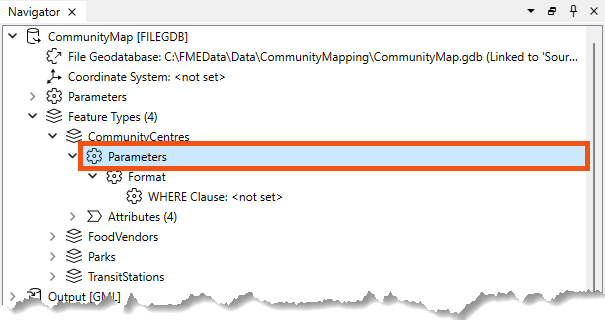
Like reader and writer parameters, the options available here vary by format.
For example, with the Esri File Geodatabase Open API reader, reader feature types have a single parameter: a WHERE Clause that can be used to restrict data on reading:
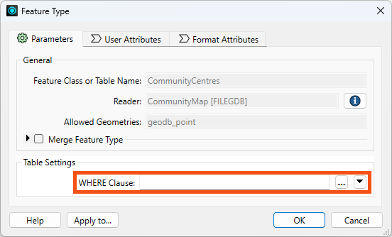
Use this parameter "where" you can to avoid reading too much data! 😉
We cover more performance tips like this in our Optimize Workspace Performance course.
Some formats do not have any parameters, such as GML writer feature types:
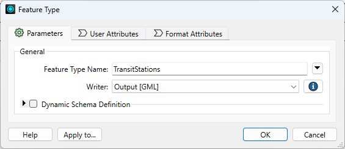
It's worth exploring the options available to you based on the format. There are some very powerful feature type parameters. For example:
One important consideration in overall workspace design is cross-OS compatibility. Generally, FME is designed so your workspaces will run on any of our supported operating systems. However, there are a few best practices to keep in mind that could save you from problems in the future. These include:
\/:*?"<>|, null, and / in your file and folder names. For more advice, see this thread.myObject and myobject, while others reject these fields as duplicate violations. Assuming case insensitivity is the safest method.
⭐New in FME 2025.0: FME now offers enhanced control for managing table and column name formatting across all database formats. Users can choose to convert names to uppercase, lowercase, or keep the original case while ensuring compatibility across different database systems. Check out your database writers' Case Conversion writer parameters.
Frank continues to work on his workspace, which reads community map data from an Esri geodatabase and writes it to GML and SQLite (parks only). However, the workspace needs several improvements:
These can be accomplished using reader/writer/feature type parameters. Let's get to work!
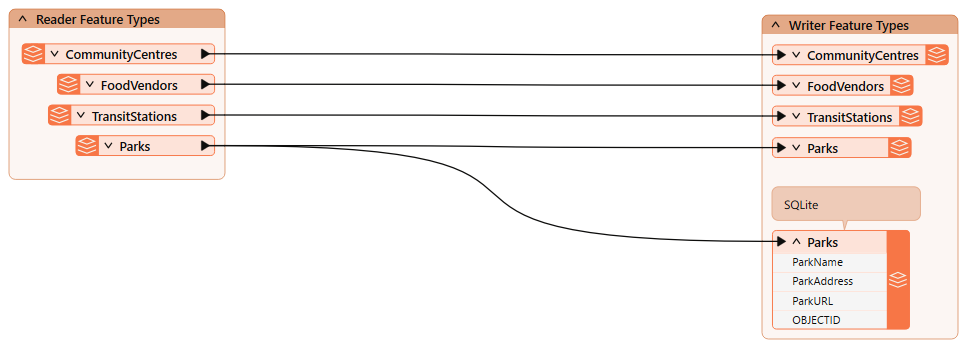
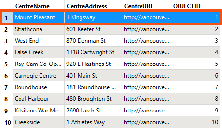
We can use a reader feature type parameter to remove the Mount Pleasant community center from the written data.
"CentreName" <> 'Mount Pleasant'
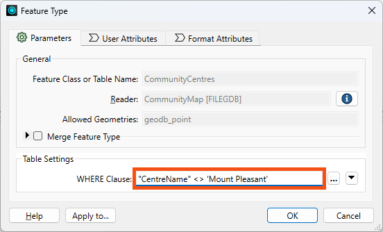
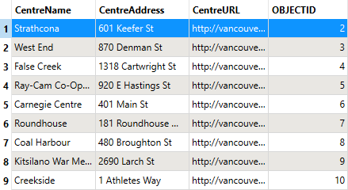
Next, we need to fix the pretty print issue. First, let's view the data without pretty print.
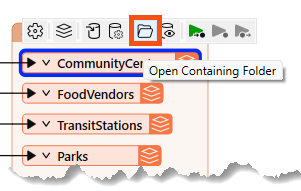
...<gml:boundedBy><gml:Envelope srsName="EPSG:26910" srsDimension="3"><gml:lowerCorner>486494.0932 5456045.6164 0</gml:lowerCorner><gml:upperCorner>494255.29509999976 5460601.212200001 0</gml:upperCorner></gml:Envelope></gml:boundedBy><gml:featureMember><fme:TransitStations gml:id="id0b91e990-57bb-4e58-8861-515334e2b534"><fme:StationName>Waterfront</fme:StationName><fme:OBJECTID>1</fme:OBJECTID><gml:pointProperty><gml:Point srsName="EPSG:26910" srsDimension="2"><gml:pos>491874.0992999999 5459264.233100001</gml:pos></gml:Point></gml:pointProperty></fme:TransitStations></gml:featureMember>...
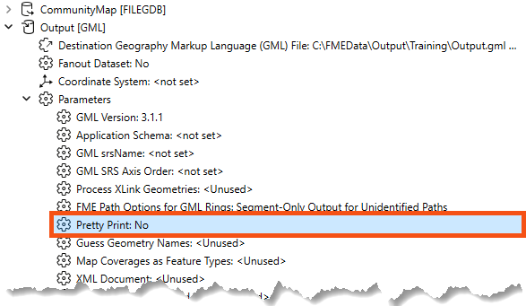
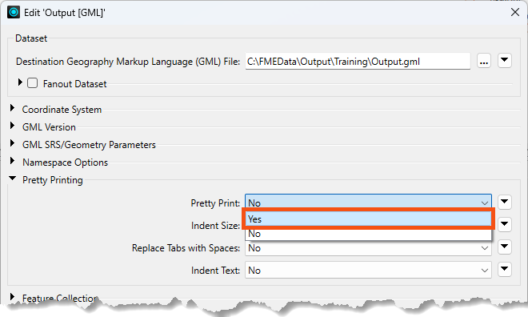
...<gml:boundedBy> <gml:Envelope srsName="EPSG:26910" srsDimension="2"> <gml:lowerCorner>491133.7028000001 5456674.0671999995</gml:lowerCorner> <gml:upperCorner>494255.29509999976 5459264.233100001</gml:upperCorner> </gml:Envelope></gml:boundedBy><gml:featureMember> <fme:TransitStations gml:id="id5519c06b-d3d0-4b4c-92de-67caec9f13f1"> <fme:StationName>Waterfront</fme:StationName> <fme:OBJECTID>1</fme:OBJECTID> <gml:pointProperty> <gml:Point srsName="EPSG:26910" srsDimension="2"> <gml:pos>491874.0992999999 5459264.233100001</gml:pos> </gml:Point> </gml:pointProperty> </fme:TransitStations></gml:featureMember>...
The City has passed a law stating that indigenous language place names must be used alongside English names.
Doing so requires finding and editing features in the Parks SQLite database. To ensure the workspace edits features rather than creating new ones, we can use an important writer feature type parameter: fme_db_operation. We can do some testing to understand how this parameter works.
The starting workspace already has an SQLite writer and feature type. When we ran it earlier, we created the database.
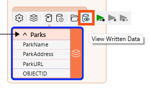
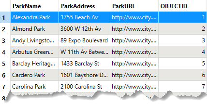
Currently, a writer parameter, Overwrite Existing Database, is enabled. Therefore, FME creates the database from scratch each time it runs the workspace, ensuring it has the same number of records as the source data, no matter how many times it runs.
To see how fme_db_operation works, let's disable that writer parameter.
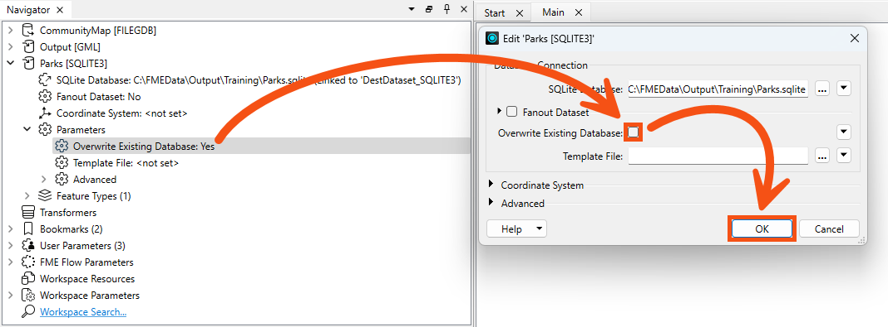
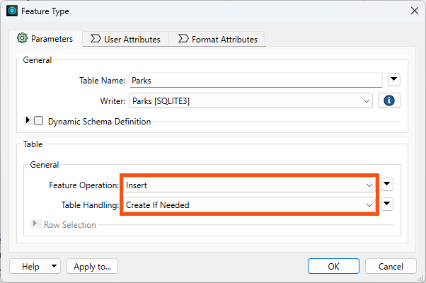
We can use this writer feature type parameter to update the names in the database.
fme_db_operation.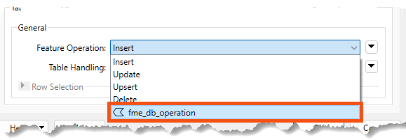
Now we can use this attribute to specify the database operation per feature. Otherwise, the operation would be defined for the entire feature type.
When we makes this change, FME requires him to specify how features will be identified via the Row Selection > Match Columns parameter.
OBJECTID.
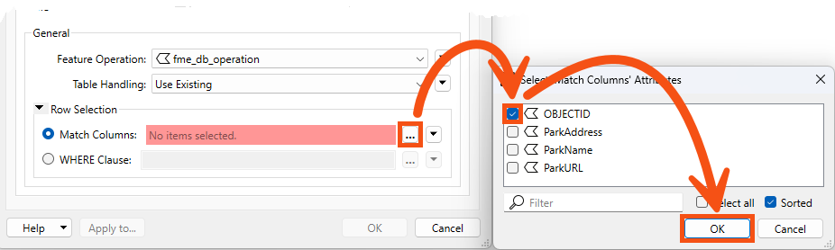
Now, the writer feature type will Insert/Update/Upsert/etc, based on the value of the fme_db_operation and OBJECTID attribute on incoming features.
We are ready to configure the workspace to change a park name using an Update feature operation.
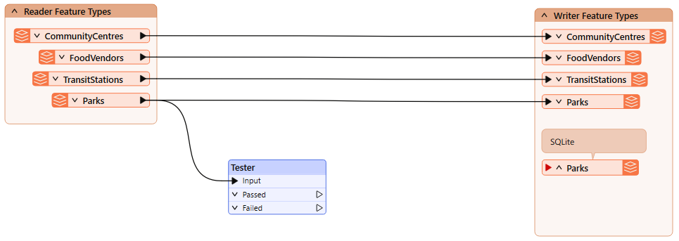
We will update a single park name as a test for now.
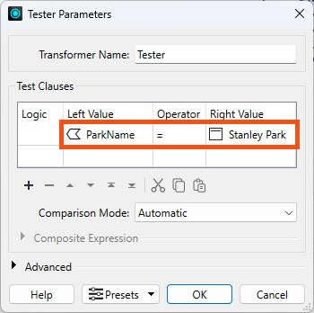
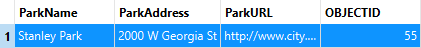
Now that we have a single test feature, let's setup the feature we'll use to edit the database.
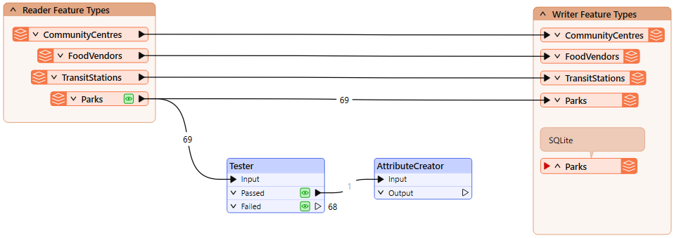
| Output Attribute | Value |
| fme_db_operation | UPDATE |
| ParkName | Spapəy̓əq (Stanley Park) |
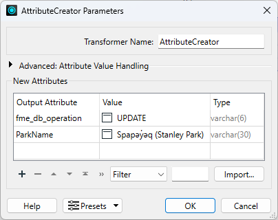
Spapəy̓əq roughly translates to "bent at the end" in Hunquminum, the language spoken by the Musqueam First Nation. It refers to a specific part of the area now known as Stanley Park, Brockton Point. The phonetic pronunciation is "spah-pee-ahk."
Learn more from the City of Vancouver or the Vancouver Heritage Foundation.
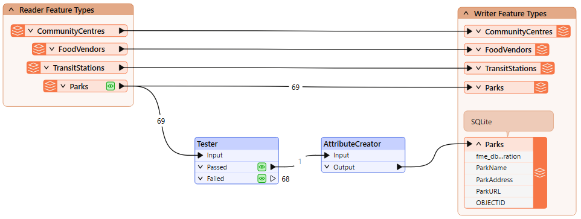
OBJECTID = 55 now has ParkName = Spapəy̓əq (Stanley Park), successfully updated in-place using a writer feature type parameter.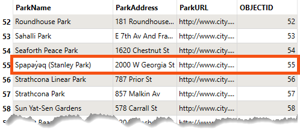
Using this method, we can control the database operation performed at the feature level. That's the power of parameters!
We could get the same output data using the parameters we started with: Insert, Create as Needed, and Overwrite Existing Database. However, that only works if you want to write the entire table each time. If you want to update specific records each time the workspace runs, for example, loading new or changed records every 10 minutes, you would have to use the fme_db_operation parameter.